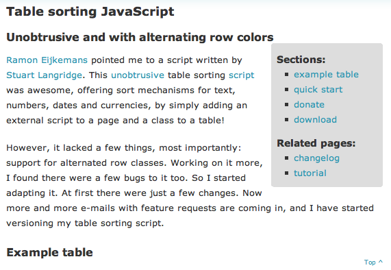

Semantic HTML and Search Engine Optimization
or How to be a POSH SEO!Introduction
So what is POSH? No, it's not just some new clothing fashion hype amongst web designers - POSH is the acronym for Plain Old Semantic HTML. The term Semantic HTML is used for a variety of things, but it has it's origin in one objective: creating (X)HTML documents using semantic elements and attributes, as opposed to using presentational HTML. The term POSH was coined because a group of highly respected web designers wanted to have a short mnemonic to easily capture the essence of the concept of Semantic HTML.
In this article, I talk about why you should use POSH, exactly what you need to do to implement it (many of you are probably doing this already, and a few of you might not even realize it!) and how you can optimize it to improve SEO for your site. I also take a brief look at Microformats at the end of the article.
Why Should I Use Semantic HTML?
You could just say: "because it's the right thing for the web," but it's benefits go far beyond that. For instance, it makes it easier for screenreaders to interpret in an order that will make sense to users with visual impairments.
Secondly, SEO and Semantic HTML are close friends. They might sometimes have conflicts of interest, which we'll get to later on in this document, but over all, they're friends. The purpose of SEO is to help search engine spiders better understand what a page is about and therefore categorize them better. Since a search engine spider basically has even less capabilities than a screenreader, it needs even more guidance in determining a page's structure and topic. Good semantic HTML provides just that structure.
Semantic HTML tries to convey meaning through the words and the tags on a page. Try thinking of it this way: the content on the page is the words you speak. The tags provide the structure, the intonation, the pauses and even the looks on your face. Basically, your tags are half your message.
Site structure
In my previous article on dev.opera.com I talked about site structures, with the aim of providing a clear way for search engines to discover which page on your site discusses which topic - this can be further improved by using Semantic HTML.
Page Structure
A page consists of a title, one or more headings, and content. This content can contain paragraphs of text, lists, quotes, images and tables. All these types of information have their own designated tag(s). We will treat all those tags, starting with the headings. Use this page about sortable tables as an example to follow along with for the coming points.
Headings, from h1 to h6
A good document has headings and subheadings, because headings make it easier to
determine the topic of a page. These headings can range in importance from h1 to h6.
To be honest, I never use h5 and h6 myself. I usually have only one h1 tag on a
content page; on portal pages, blog homepages for instance; you can have multiple h1's,
for all your articles for example. From a semantic perspective that might be weird, from
an SEO perspective, it's great.
Strict semanticists sometimes suggest that you should only have one h1, two h2's,
3 h3's etc. I don't agree with that, as I think it's very normal for a document to have
more than two h2's, in fact, this document has a lot more of them, and I think it's very
well structured.
Very often, designers who have heard a bit about Semantic HTML will fit the name of
a site in the header into an h1 tag. On the homepage of a site, that might be a very
wise decision. On every other page within your site, you probably have a specific topic,
which might be related to your site's name but doesn't have to be. On those sub pages,
that topic should be in the h1 tag, and it's wise to put the name of your site into an
h4 tag or maybe even a span.
Search engines give the words used in the various headings more weight in determining
the topic of a page. The keyword your page is optimized for should appear at least once
in an h1 tag, and related keywords should be used in the other headings, as illustrated
in Figure 1.

Figure 1: Include keywords in your page headings to improve SEO for your page.
Images
Images are used in all sorts of ways within documents, and you should apply the
proper semantics to them. The only really useful semantic variable on an img tag is the
alt attribute, and it should only be used if the image adds meaning to the document.
If the image is there only for decorative purposes, leave the altattribute empty. Otherwise,
describe what the image is showing in the alt attribute.
If you're using images to replace text, because you want the text to look nicer
(image replacement,) make sure that you're using normal text in your HTML, and that you replace
that text with images by using CSS. You have to do this because both people with visual
impairments and search engines cannot read the text in your images. My own preferred
method of doing this is through applying the image with CSS background-image,
and then hiding the HTML text using a large text-indent (about -1000px or so does the
trick.) Be careful though: the text in the image should be exactly the same as the text
in your document. If it's not, you risk losing a lot of ranking value from the search engines.
Abbreviations and acronyms
You're bound to do it as a web designer - I do it in this article several times - using acronyms
or abbreviations. When you do, make sure you provide the written out version of the term using
abbr or acronym tags. That's good for your keyword density too!
Tables
We all know why using tables for layout out web sites is bad, and we also know what they are supposed to be used for - displaying tabular data. Just using basic tables is a big step in the right direction, but there are a number of ways in which you can improve your tables' semantic value, thereby improving your site's SEO further:
- Use table headings (
th) for your table's headings (it's really that easy) - If you can, use the
thead,tbodyandtfootsections to properly section your table - Provide a caption for your table, describing what's in it
The caption and the table headings would be a good, and usually natural place to use some of your document's keywords.
Emphasizing your meaning
Remember I said earlier that tags should be the emotion of your text? This is where the real
emotion comes in: you can provide emphasis to certain words using em or
strong. In the old days, people used b and i for that, but these tags are no
longer encouraged, since they imply a specific styling, whereas HTML should only describe
structure/meaning (all style should be created using CSS, of course.)
Search engines give more weight to any words marked up using any of these four tags. Overusing them can do more harm than good, and actually cause a loss of emphasis, but if treated with care, they can apply an extra dimension to your documents.
A few words on (i)frames
It's quite simple: don't use them. Search engines don't get them, and screenreaders have quite a hard time using them as well.
Conflicts of interest
All of the above rules can be bent a little of course, which is a good thing, as sometimes it's
necessary to keep everyone at your organization happy. Say your boss wants a page to have a zappy
marketing title you'd rather not have, because it doesn't exactly describe what's on the page, and
pushes your most important keyword to the second heading. If you're in a competitive area, it
might be wise to make the page look like that for your boss, yet use an h2 for the first heading,
and an h1 for the second.
The same goes for iframes and images. If someone really wants you to put a certain block of content on a specific well-ranking page, but you don't want to risk losing focus, you could of course put that content into an iframe or image, and choose not to provide an alternative.
These decisions are up to you in the end - normal semantics should be the basis of your design, and the conflicts should only arise when you're really optimizing your pages.
Not so simple semantic HTML - Microformats
Microformats are also semantic HTML, but they are not exactly simple! At the moment, search
engines are hardly using microformats in their algorithms, but that might change. The hCard
especially (the HTML version of the vCard) has some very easy and obvious uses for search engines,
and I suspect that they will start using those within the next couple of years. You can apply
intelligent extra semantics within Microformats using the basic set of HTML elements - for example,
a good way of marking up your address hCard is by using the address tag as a container!
Conclusion
By using semantic HTML to mark up your pages, you can create pages that are more accessible, both to people with disabilities, as well as to search engines. Good semantic markup helps search engines to determine what the topic of a page is, and if used together with a good site structure, allows you pushy up your web site rankings!
This article is licensed under a Creative Commons Attribution, Non Commercial - Share Alike 2.5 license.
Comments
The forum archive of this article is still available on My Opera.
-
Thanks Joost, I sometimes get confused with site structure and how to uptimize it. Your WordPress seo plugin has really helped my site a lot, though I sometimes run into confusion
No new comments accepted.Azubuike Ikedionu
Sunday, October 7, 2012